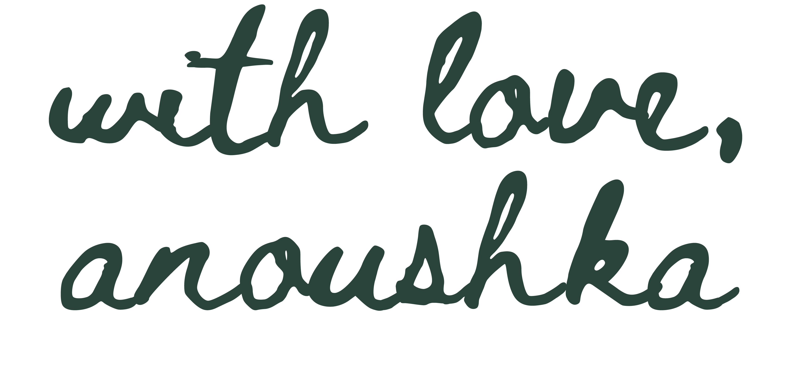

about
(these words)
The Green Couch (in words) is a time capsule, an archive of inside jokes between my friends and I. Set in Manhattan, New York, in an apartment in
the East Village (9E). Primarily between the months of August 2023 - April 2024. Right now, these moments feel like forever, these jokes feel like a part
of our every day but this time capsule makes these jokes everlasting. The Green Couch also includes a cast page, to give more context about the people
included, and an archive page to give a feel of the setting.
Every inside joke may make no sense to you at first but, I ask for your time, to look at the words inwards, get a feel of our space through the
short films embedded into every page, create your own image of our space.
The Green Couch is a metaphor for the memories I have with my friends. The Green Couch is our living room in 9E, which is where we all hang out.
Couches have always felt very iconic to me. When I want to think of any house I've ever lived in, my mind first comes to couch in that place. If
I were to recreate any space into a set, I would first think of the couch as a center piece of communion, therefore The Green Couch (in words), a
time capsule to look into our space inwards.
